Fundacja „Inspiratio Lacus” została powołana z misją ochrony dziedzictwa kulturowego i przyrodniczego oraz promocji sztuki i turystyki w wyjątkowym regionie Pogórza Rożnowskiego. Czerpiemy inspirację z lokalnej historii, tradycji i piękna otaczającej natury. Wierzymy, że kultura i nasze dziedzictwo są kluczowe dla rozwoju społeczności i budowania wrażliwości na otaczający świat. Nasze działania łączą troskę o przeszłość z dążeniem do tworzenia nowych możliwości dla przyszłych pokoleń.
Jesteśmy wrażliwi na piękno historycznych obiektów, dlatego czynnie ratujemy nasze lokalne perełki. Wspieramy również rozwój talentów artystycznych, szczególnie wśród dzieci i młodzieży. Organizujemy koncerty, warsztaty, festiwale i wydarzenia kulturalne, które umożliwiają artystom prezentację swojej twórczości, a uczestnikom – aktywne obcowanie z kulturą. Popularyzujemy wiedzę o dziedzictwie regionu, zachęcając zarówno mieszkańców, jak i turystów do odkrywania jego unikalnych walorów.
Nasze projekty mają na celu budowanie świadomości na temat wartości kulturowych i ekologicznych. Wspieramy inicjatywy promujące ochronę środowiska oraz rozwój turystyki ekologicznej poprzez programy integrujące kulturę z przyrodą. Pragniemy, aby nasze działania inspirowały do refleksji nad historią i naturą oraz zachęcały do aktywnego uczestnictwa w życiu społecznym.
Jednym z priorytetów Fundacji jest zwiększanie rozpoznawalności regionu na poziomie krajowym i międzynarodowym. Współpracujemy z lokalnymi społecznościami, artystami oraz instytucjami, tworząc przestrzeń sprzyjającą rozwojowi i integracji. Poprzez nasze działania chcemy nie tylko chronić dziedzictwo kulturowe i przyrodnicze, ale także inspirować innych do wspólnego budowania lepszej przyszłości. Zapraszamy do współpracy wszystkich, którzy podzielają nasze wartości i chcą wspierać rozwój regionu.
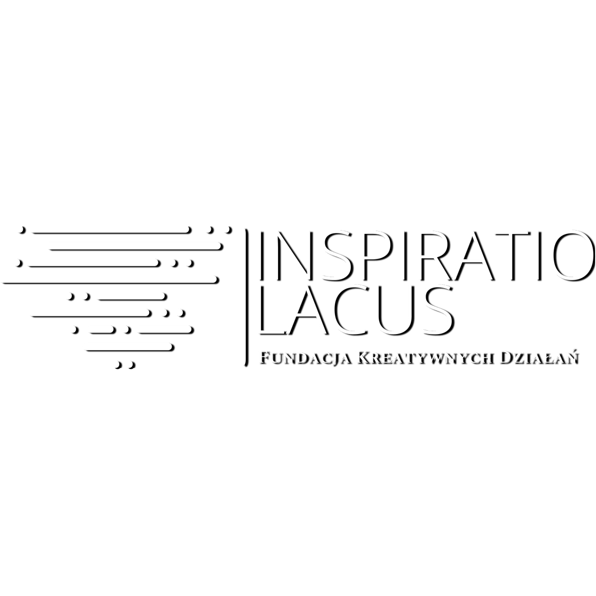
Z dumą informujemy, że nasz wieloletni partner, Bistro Ułan, po raz kolejny został wyróżniony prestiżową rekomendacją portalu Restaurant Guru 2025!
To ogromny sukces, ponieważ Restaurant Guru to jeden z największych i najbardziej rozpoznawalnych portali gastronomicznych na świecie – korzysta z niego ponad 30 milionów miłośników dobrego jedzenia miesięcznie. Serwis ten agreguje recenzje z najważniejszych portali kulinarnych (w tym Google, Michelin, Yelp, Facebook), a rekomendację otrzymują wyłącznie lokale, które mogą pochwalić się bardzo wysokimi ocenami oraz stale utrzymywanymi standardami.
Takie wyróżnienie nie jest przyznawane każdemu – dyplom Restaurant Guru „Recommended” otrzymują tylko restauracje, które:
-mają znakomite opinie i oceny od Gości,
-są pozytywnie oceniane na wielu niezależnych, międzynarodowych platformach,
-konsekwentnie dbają o jakość, atmosferę i najwyższy poziom obsługi.
Jesteśmy dumni, że nasza współpraca opiera się na partnerstwie z miejscem, które rokrocznie buduje swoją renomę nie tylko na poziomie regionu, ale również na arenie międzynarodowej. Sukces Bistro Ułan to efekt zaangażowania całego zespołu i zaufania tysięcy Gości – serdecznie gratulujemy!
Zapraszamy do odwiedzin i doświadczenia jakości docenionej przez globalnych smakoszy.
Fundacja Inspiratio Lacus
6 września 2025 roku w Gródku nad Dunajcem odbyło się wydarzenie niezwykłe, które na długo pozostanie w pamięci uczestników. Z okazji tysiąclecia koronacji Bolesława Chrobrego Fundacja Inspiratio Lacus zorganizowała ucztę królewską, podczas której historia ożyła na nowo.
Przy specjalnie udekorowanych stołach, w namiocie ustawionym tuż przy Bistro Ułan, goście mogli zasmakować potraw inspirowanych średniowiecznym jadłem. Podano m.in. rosół z gęsi i bażanta z dodatkiem szafranu, comber z jelenia z kapustą zasmażaną z grzybami i kaszą, a także tradycyjne przekąski – chleb ze smalcem, kiszonymi ogórkami i twarogiem z czosnkiem niedźwiedzim. Całość dopełnił kwas chlebowy oraz słodki finał w postaci pieczonej gruszki z orzechami i miodem.
Uczta była nie tylko spotkaniem z dawnymi smakami, lecz także podróżą w świat historii i literatury. Pisarz i historyk Jacek Komuda w barwnej prelekcji przybliżył realia życia na dworze piastowskim oraz symbolikę uczty koronacyjnej. Niezapomnianym punktem programu był także pokaz szermierki szablami, który wprowadził zgromadzonych w klimat dawnych rycerskich tradycji.
Całe wydarzenie zostało zarejestrowane w formie reportażu. Dzięki temu każdy, kto nie mógł uczestniczyć w uczcie osobiście, ma okazję poczuć jej wyjątkową atmosferę i zobaczyć, jak historia splata się z kulinarnym doświadczeniem
Serdecznie zapraszamy do obejrzenia i przeżycia jeszcze raz tej niezwykłej podróży w czasie!
Fundacja Inspiratio Lacus
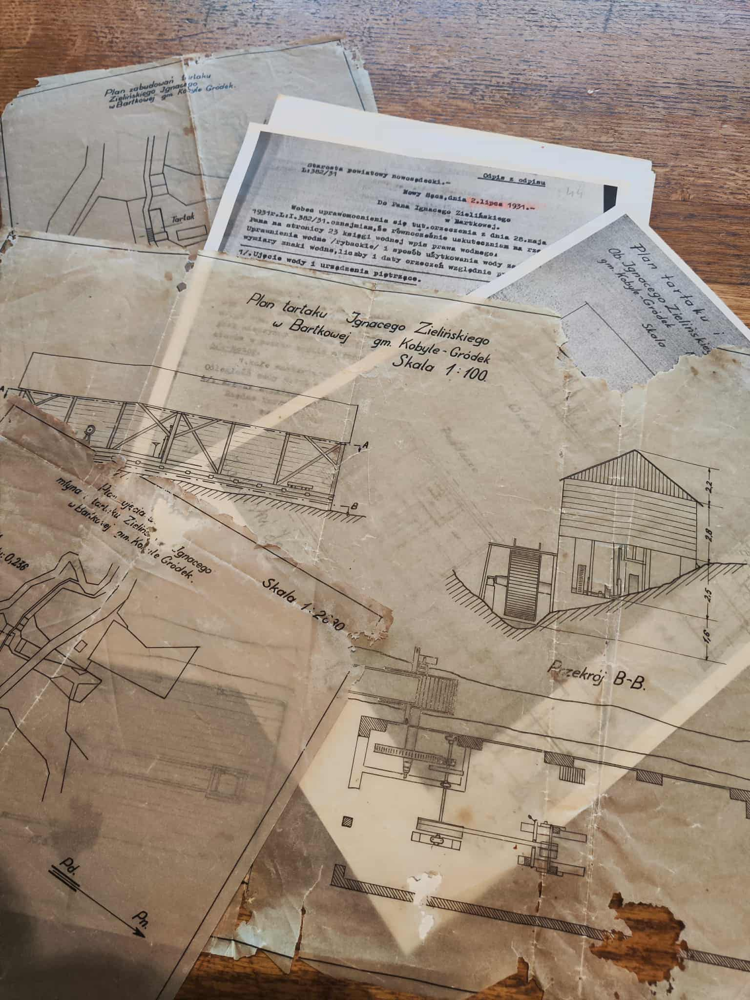
Znakomite wieści! Z dumą informujemy, że w nasze ręce trafiła kompletna, przedwojenna dokumentacja techniczna młyna i tartaku w Bartkowej-Posadowej.
Dzięki wielkiemu zaangażowaniu przyjaciół i właścicieli młyna udało się skompletować ten bezcenny, archiwalny zbiór. Zawiera on rysunki techniczne oraz szczegółowe parametry hydrotechniczne, które pozwolą nam odtworzyć obiekty z największą pieczołowitością. Posiadając pełne dane techniczne, możemy zrekonstruować nie tylko młyn i tartak, ale także wszystkie urządzenia wodne, w tym stopień i kanały zasilające.
To ogromny krok naprzód, który umożliwia przejście do fazy projektowej z pewnością, że nasze plany są oparte na autentycznym dziedzictwie. Dokumentacja stanowi niezwykle cenne źródło informacji, które posłuży do przygotowania rzetelnej i pełnej dokumentacji projektowej oraz przyczyni się do zachowania historycznego dziedzictwa regionu.
Spotkanie, na które zapraszamy, nie jest przedsięwzięciem komercyjnym ani organizowanym dla zysku. Jest to owoc pasji i oddolnych działań naszej Fundacji, mających na celu przybliżenie dziedzictwa Małopolski, jej historii i smaków, które od stuleci kształtowały naszą kulturę.
Wierzymy, że wspólna biesiada w tym duchu będzie dla Państwa wyjątkowym doświadczeniem.
Pragnąc zapewnić wszystkim Gościom należytą wygodę i miejsce przy biesiadnym stole, uprzejmie prosimy o potwierdzenie udziału do dnia 5 września.
Będzie dla nas zaszczytem gościć Państwa wraz z Osobą Towarzyszącą.
Podczas uczty każdy z gości zostanie ugoszczony przy królewskim stole. Dzięki dofinansowaniu zakupiliśmy specjalną zastawę, na której podane będą wyjątkowe potrawy inspirowane kuchnią dawnych czasów.
Na początek rozgrzeje aromatyczny rosół z gęsi i bażanta z dodatkiem szafranu.
Na drugie danie serwowany będzie comber z jelenia – pieczony według staropolskiej receptury, podany z kapustą zasmażaną z grzybami leśnymi oraz kaszą jaglaną.
Nie zabraknie również domowego chleba ze smalcem i ogórkami kiszonymi, a także twarogu z czosnkiem niedźwiedzim.
Do picia podawany będzie kwas chlebowy – naturalny i orzeźwiający.
Na deser podamy gruszki pieczone z orzechami i miodem, które zwieńczą królewską biesiadę.
Całość odbędzie się w specjalnym namiocie przy Bistro Ułan, gdzie oprócz ucztowania goście będą mieli okazję wysłuchać fascynującej prelekcji Jacka Komudy, który opowie o dworze Piastów i realiach uczty koronacyjnej.
Wieczór uświetni również pokaz szermierki szablami, wprowadzający w klimat dawnych rycerskich tradycji.
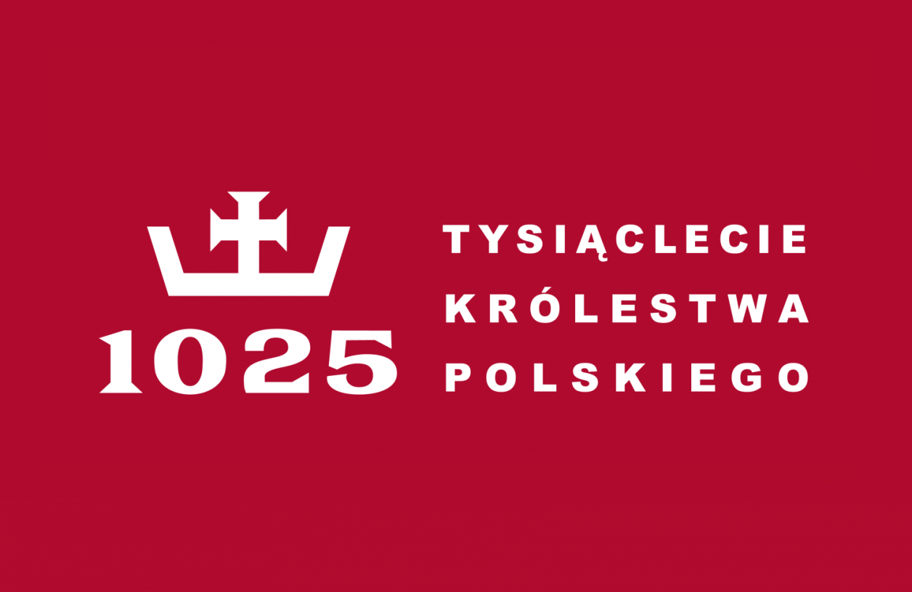
Z radością informujemy, że nasza Fundacja otrzymała wsparcie finansowe z Urzędu Marszałkowskiego Województwa Małopolskiego na realizację zadania w obszarze kultury, sztuki oraz ochrony dóbr kultury i dziedzictwa narodowego.
Projekt nosi tytuł „Z królewskiego stołu – pieśń dawnych smaków” i jest dla nas niezwykle ważny, gdyż pozwoli na odkrycie i promocję bogactwa tradycji kulinarnych oraz historycznych smaków regionu Małopolski.
Jest to także element obchodów tysiąclecia Królestwa Polskiego, co dodatkowo podkreśla rangę i wyjątkowość tego przedsięwzięcia.
To kolejny krok w kierunku ocalenia i promowania bogatego dziedzictwa kulturowego regionu. Dziękujemy za wsparcie!
Szczegóły dotyczące realizacji i planowanych działań w ramach tego przedsięwzięcia opublikujemy wkrótce. Zachęcamy do śledzenia naszych aktualności!
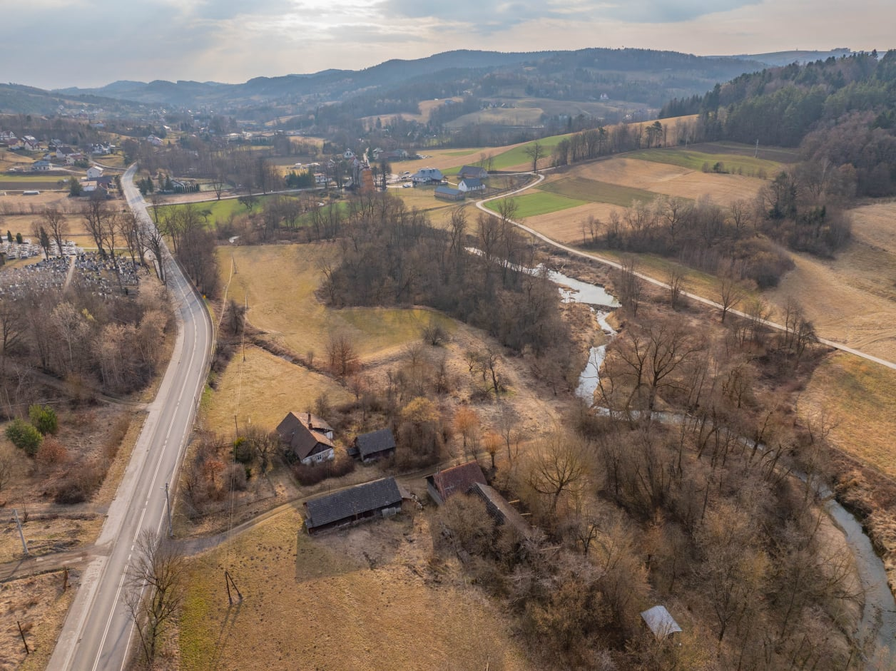
Z ogromną radością ogłaszamy, że udało nam sie uzyskać dotację na realizację kluczowego etapu rewitalizacji historycznego kompleksu młyńskiego w Bartkowej-Posadowej.
Właśnie podpisaliśmy umowę, dzięki której możemy rozpocząć prace nad koncepcją stworzenia ścieżki przyrodniczo-edukacyjnej oraz nad przygotowaniem kompletnej dokumentacji niezbędnej do dalszych prac projektowych. Środki na ten cel pozyskaliśmy w ramach programu "Małopolska Gościnna - II edycja", realizowanego przez Urząd Marszałkowski Województwo Małopolskie.
Jest to milowy krok, który pozwoli nam przejść od wizji do konkretnych działań. Ścieżka będzie dostępna dla każdego odwiedzającego i pozwoli lepiej poznać naturalne piękno regionu oraz historię młyna, łącząc ochronę dziedzictwa kulturowego z edukacją ekologiczną.
Dziękujemy wszystkim, którzy nas wspierają! Dzięki Wam marzenie o ocaleniu tego wyjątkowego miejsca staje się rzeczywistością. Trzymajcie kciuki za dalsze postępy – będziemy na bieżąco informować o kolejnych etapach prac.
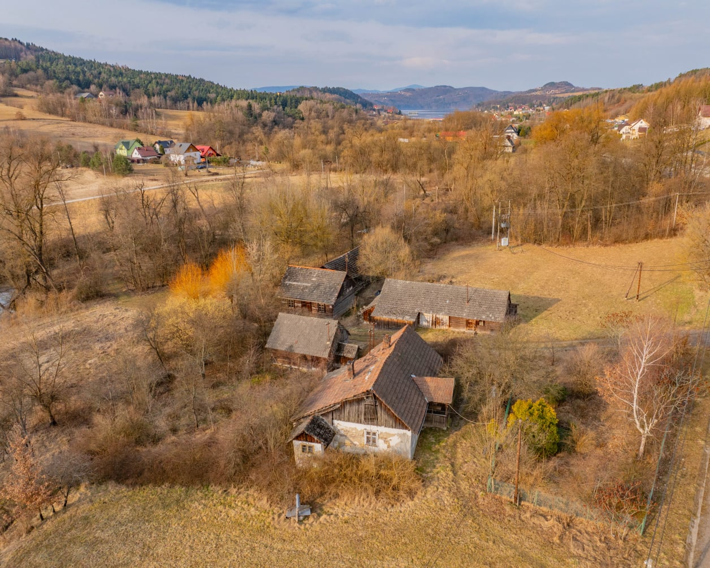
Z przyjemnością informujemy, że Fundacja Inspiratio Lacus oficjalnie dysponuje nieruchomością obejmującą histroryczny młyn wodny wraz z zabudowaniami gospodarczymi w Bartkowej-Posadowej.
Dysponując prawami do tej wyjątkowej nieruchomości, otwieramy nowy rozdział w historii tego miejsca, zyskując możliwość rozpoczęcia starań o środki na ratowanie, rekonstrukcję i rewitalizację całego obiektu.
To dla nas ogromny krok naprzód – dzięki temu możemy rozpocząć przygotowania do składania wniosków o dofinansowanie prac związanych z ratowaniem, rekonstrukcją i ponownym uruchomieniem młyna oraz tartaku.
Naszym celem jest stworzenie wyjątkowej przestrzeni, która połączy ochronę dziedzictwa materialnego z działalnością edukacyjną i kulturalną. W planach mamy nie tylko konserwację historycznych obiektów, ale także przywrócenie ich do życia – tak, by znów napędzała je woda i aby stały się miejscem spotkań, warsztatów i wydarzeń artystycznych.
Fundacja podejmie się opieki nad całym kompleksem, by ocalić ten fragment lokalnej historii i udostępnić go kolejnym pokoleniom.
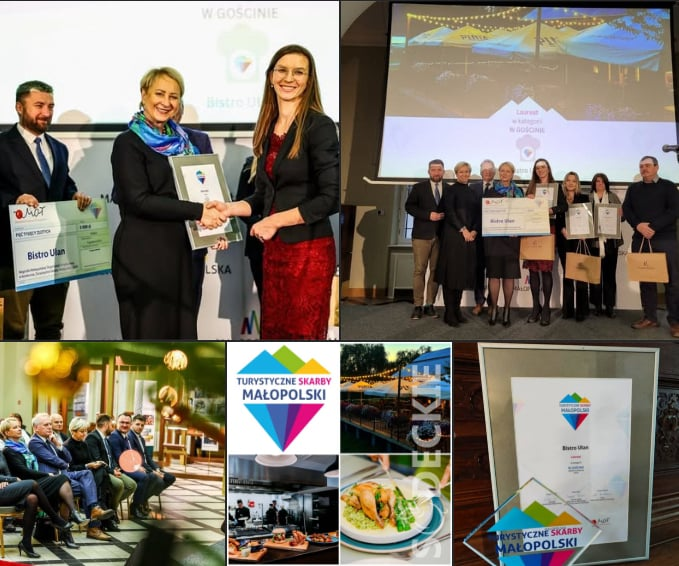
Nasz partner, Bistro Ułan, z prestiżową nagrodą!
Z ogromną radością i dumą informujemy, że nasz niezastąpiony partner, Bistro Ułan z Gródka nad Dunajcem, zdobył pierwsze miejsce w prestiżowym konkursie „Turystyczne Skarby Małopolski” w kategorii „W gościnie – oferta kulinarna”!
To wyjątkowe wyróżnienie, przyznawane przez Urząd Marszałkowski Województwa Małopolskiego, jest potwierdzeniem niezwykłej jakości kulinarnej, gościnności i wyjątkowej atmosfery, którą Bistro Ułan tworzy na co dzień. My w Inspiratio Lacus mamy to szczęście, że możemy z nimi współpracować przy naszych lokalnych wydarzeniach, w tym podczas cyklicznych koncertów i Jam Session.
Jesteśmy dumni, że nasza wspólna, oddolna inicjatywa, promująca dziedzictwo Małopolski, prowadzona jest właśnie z takimi partnerami. To dowód na to, że pasja i serce włożone w lokalną ofertę kulinarną i kulturalną są doceniane na najwyższym szczeblu regionalnym.
Serdecznie gratulujemy całemu zespołowi Bistro Ułan i życzymy kolejnych sukcesów! Jesteśmy pewni, że to dopiero początek ich drogi do jeszcze większej sławy. Read more..
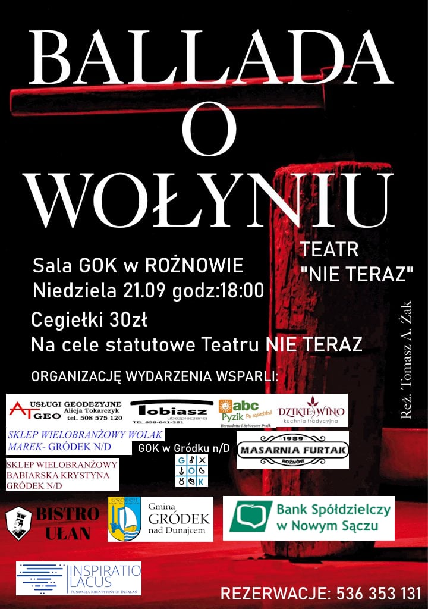
Fundacja Inspiratio Lacus serdecznie zaprasza na wyjątkowe wydarzenie artystyczne – spektakl „Ballada o Wołyniu” w reżyserii Tomasza A. Żaka, który odbędzie się 21 września 2025 r. o godz. 18:00 w sali Gminnego Ośrodka Kultury w Rożnowie.
🎭 Obsada:
Aleksandra Pisz, Monika Szomko, Anna Warchał
Głosy: Tomasz Lewandowski, Jerzy Pal
Technika: Ryszard Zaprzałka
Zdjęcia: Aleksandra Żak
Wstęp: Cegiełka 30 zł na cele statutowe Teatru Nie Teraz.
Rezerwacja biletów: 536 353 131
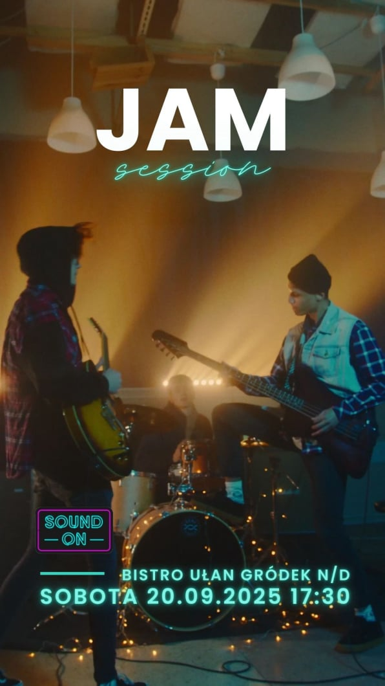
Zapraszamy wszystkich muzyków i słuchaczy. Otwarta scena, luźny klimat i granie do wieczora. Wpadajcie z instrumentami albo po prostu posłuchać. 20.09.2025, start 17:30
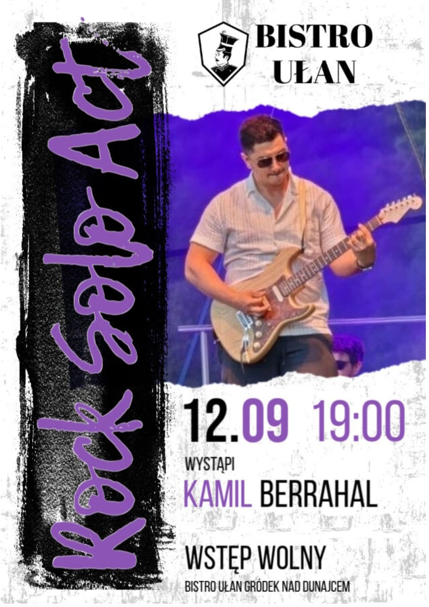
W piątkowy wieczór w naszym ogrzewanym namiocie wystąpi Kamil Berrahal, muzyk mieszkający "za miedzą" , który potrafi zaczarować gitarą i stworzyć wyjątkową atmosferę.
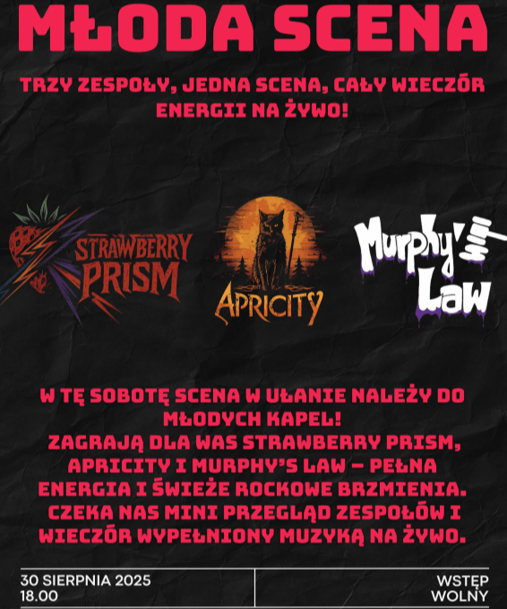
Scena należeć będzie do młodych kapel pełnych energii i świeżych brzmień.
Zagrają dla Was:
Strawberry Prism – rock z pomysłem i własnymi numerami,
Apricity – mocne gitarowe riffy i klimatyczne melodie,
Murphy’s Law – energia, która rozgrzeje publiczność od pierwszego dźwięku.
Czeka nas mini przegląd zespołów i cały wieczór wypełniony muzyką na żywo nad Jeziorem Rożnowskim.
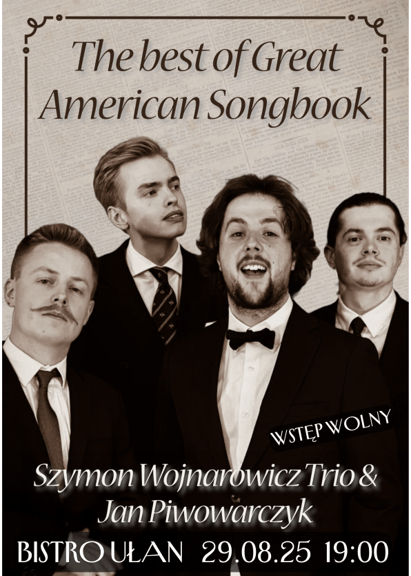
Szymon Wojnarowicz Trio to zespół złożony z młodych, ale doświadczonych muzyków. Powstał w 2021 roku łącząc pasję do muzyki, swobodnej improwizacji oraz szerokiego wachlarza inspiracji. W ramach swojej działalności współpracuje z innymi artystami.
Jan Piwowarczyk - wokal,
Szymon Wojnarowicz - fortepian,
Jakub Wosik - kontrabas,
Piotr Szałajko - perkusja
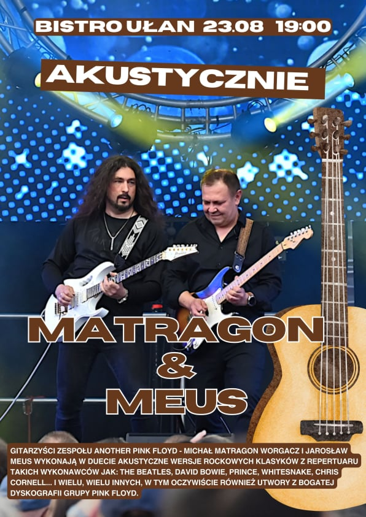
Gitarzyści zespołu Another Pink Floyd - Michał Matragon Worgacz i Jarosław Meus wykonają w duecie akustyczne wersje rockowych klasyków.
Bistro Ułan, Gródek nad Dunajcem.
Sobota, 23 sierpnia, godzina 19.00.
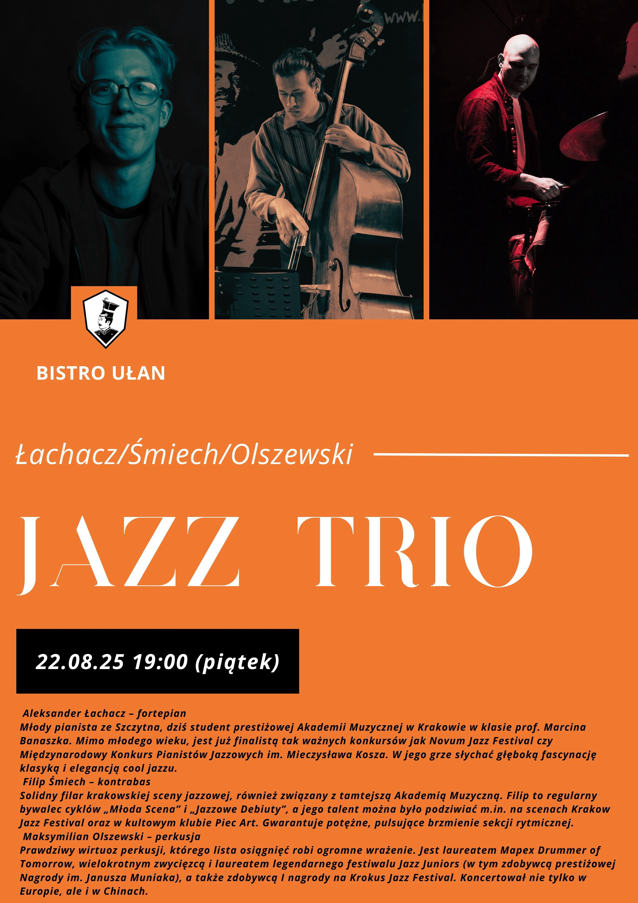
Zapraszamy na wyjątkowy koncert jazzowy już w ten piątek w Bistro Ułan! Wystąpi dla Was trio wybitnych młodych muzyków: Łachacz/Śmiech/Olszewski Trio.
Aleksander Łachacz – fortepian
Filip Śmiech – kontrabas
Maksymilian Olszewski – perkusja
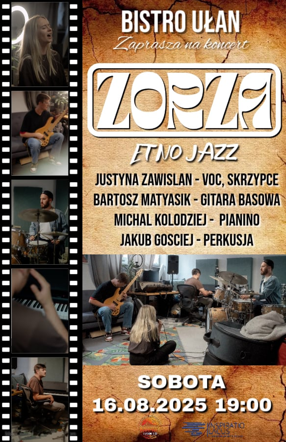
Zespół Zorza powstał w 2022 roku dzięki sile czterech jego członków – Michała Kołodziejka, Bartosza Matyasika, Jakuba Gościeja i Justyny Zawiślan. Razem tworzą muzykę kwalifikującą się jako etno jazz z elementami improwizowanymi. W ich twórczym dorobku można dostrzec wpływy innych muzyków takich jak Tigran Hamasyan bądź Shai Maestro. Ich utwory łączą kilka gatunków tworząc niecodzienną kombinację jazzu, metalu, popu, folku, oraz elementów elektronicznych.
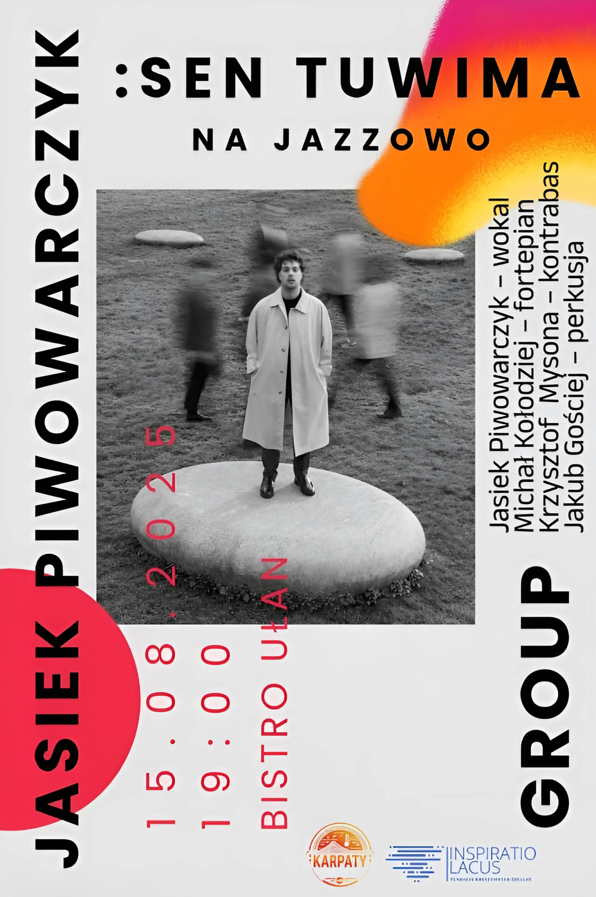
Projekt „Sen Tuwima” to artystyczne widowisko łączące muzykę, słowo i obraz w harmonijną całość. Projekt ma na celu promocję polskiego dziedzictwa kulturowego i wprowadzenie słuchaczy w nostalgię oraz magię snu poety. Przenośne głośniki
Jasiek Piwowarczyk Group to zespół składający się z niezwykle utalentowanych młodych muzyków, którzy wyróżniają się na polskiej scenie jazzu.
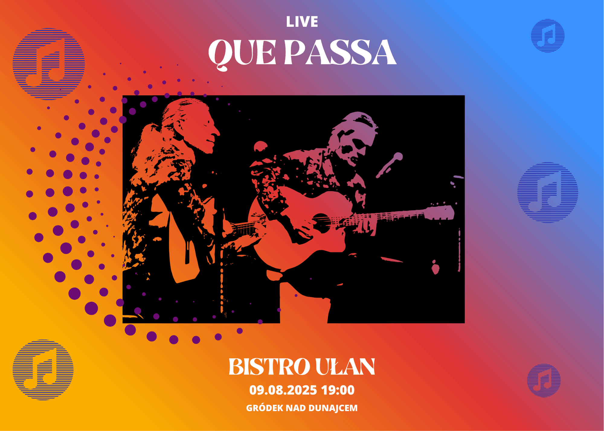
Que Passa wraca na naszą scenę w sobotę, 9 sierpnia 2025 o 19:00 — gramy w namiocie przy Bistro Ułan w Gródku nad Dunajcem. W składzie: Jarosław Dzień i Marcin Hilarowicz na gitarach (Marcin w kilku numerach usiądzie też do cajonu) oraz Tomasz Bielecki na cajonie i perkusjonaliach.
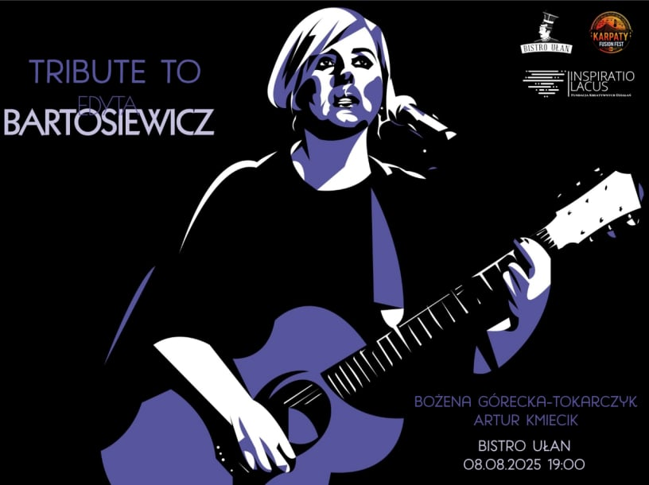
Już 8 sierpnia o 19:00 zapraszamy na niezwykły koncert, podczas którego usłyszycie najpiękniejsze utwory Edyty Bartosiewicz w wyjątkowych aranżacjach.
Wystąpią:
Bożena Górecka-Tokarczyk
Artur Kmiecik
To będzie wieczór pełen emocji, dobrej muzyki i klimatu, którego nie da się podrobić.
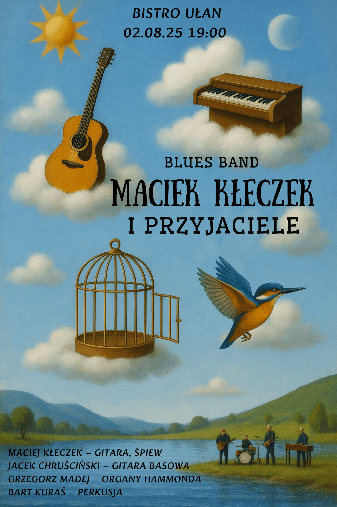
Blues nad Jeziorem Rożnowskim tuż pod Wyspą Grodzisko? Brzmi dobrze!
W sobotę, 2 sierpnia o 19:00, wpadnijcie do Ułana – Maciek Kłeczek i Przyjaciele zadbają o wyjątkowy klimat wieczoru.
Gitara, bas, prawdziwe organy hammonda, perkusja i cztery osobowości, które wiedzą, jak grać bluesa:
Maciek Kłeczek, Jacek Chruściński, Grzegorz Madej i Bart Kuraś.
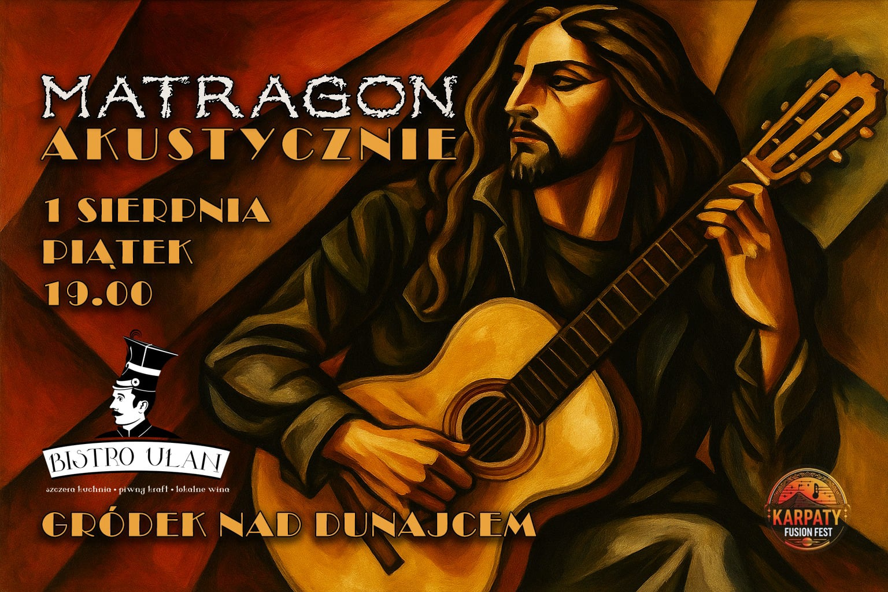
Koncert live
Bistro Ułan - Gródek Nad Dunajcem
1 sierpnia 2025, piątek, godz.: 19.00
w programie akustyczne aranżacje
klasycznych rockowych przebojów
z lat 60, 70, 80, 90...
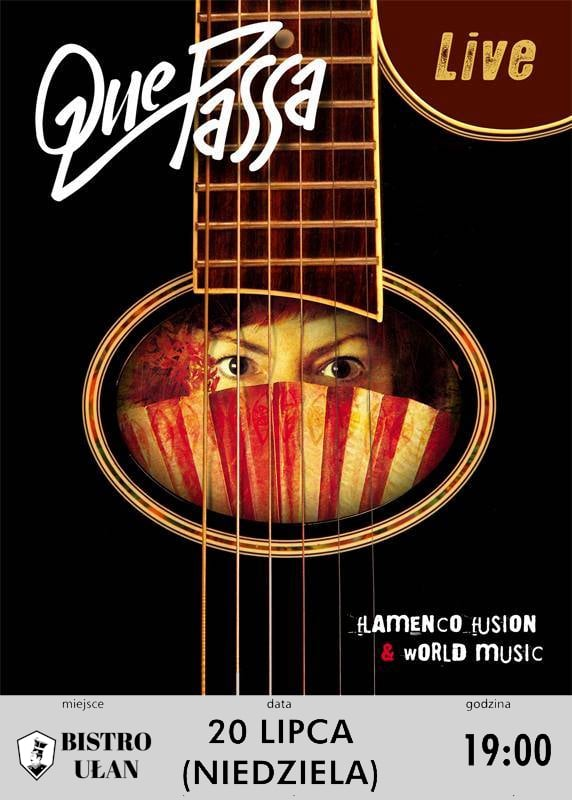
W tę niedzielę zapraszamy na wyjątkowy wieczór z Que Passa – zespołem flamenco fusion, który zabierze Was w muzyczną podróż między flamenco, jazzem, latin i world music.
Wystąpią:
Tomasz Bielecki – cajon i instrumenty perkusyjne. Współpracuje z Adamem Sztabą, a można go też było zobaczyć m.in. na amfiteatrze w Opolu, gdzie pokazuje niesamowitą energię rytmiczną
Jarosław Dzień – gitara akustyczna, absolwent Akademii Muzycznej w Krakowie, założyciel Que Passa i lider trio Acoustic Guitar Kollektiv. Współpracował z artystami takimi jak Marek Napiórkowski czy Golec uOrkiestra
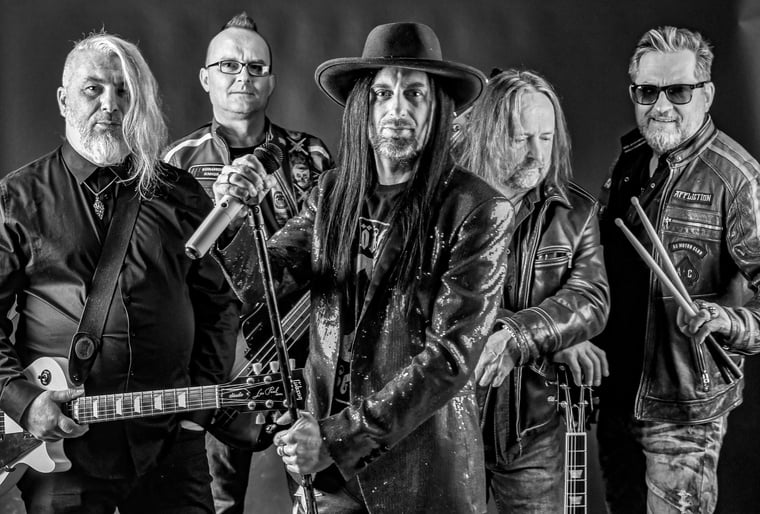
W tę sobotę wraca do nas ekipa, która w Ułanie gra co roku i za każdym razem przyciąga pełny taras – Futro z Ryby znów zagra nad jeziorem.
Mocne, melodyjne granie, świetny kontakt z publicznością i charyzmatyczny wokal Adama „Cypisa” Petersa-Musiała – to po prostu działa. W składzie także Marek Daniec i Dariusz Durał na gitarach, Paweł Lekki na basie i Wojciech Feć na perkusji. Kto ich zna, ten wie, że to będzie konkretny wieczór.
Grali na wielu scenach w Polsce, ale zawsze z radością wracają do Gródka
Start: sobota, 19 lipca, godz. 19:00
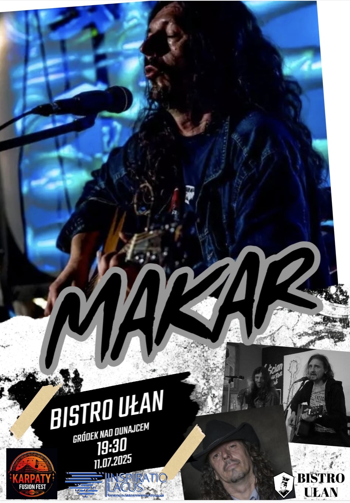
LEGENDA POLSKIEGO ROCKA I BLUESA W BISTRO UŁAN!
Już w ten PIĄTEK zapraszamy na wyjątkowy koncert ANDRZEJA „MAKARA” MAKAREWICZA!
To nie będzie zwykły wieczór. To będzie spotkanie z historią polskiego bluesa i rocka – żywą, autentyczną i graną prosto z serca.
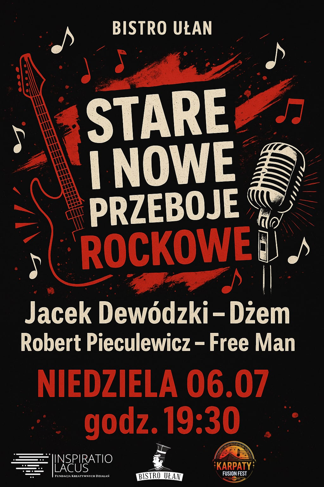
Jeśli Wasze akumulatory przed nowym tygodniem potrzebują solidnego naładowania, to mamy na to sprawdzony sposób. Przygotujcie się na wieczór pełen legendarnych dźwięków i gitarowej magii pod hasłem: "Stare i nowe przeboje rockowe"!
JACEK DEWÓDZKI (Dżem)
Legenda. Charyzma. Głos, który przez lata definiował brzmienie kultowego zespołu DŻEM! To właśnie on stał za mikrofonem po odejściu Ryśka Riedla, dając nowe życie największym hitom i tworząc nowe. Poczujecie ten dreszcz na plecach, słysząc te klasyki na żywo!
ROBERT PIECULEWICZ (Free Man)
Gitarowy wirtuoz i pasjonat! Rodzice chcieli, żeby trochę dał spokój klawiszom – więc kupili mu gitarę. Nie wiedzieli, że wystarczy kilka dzwięków Van Halena, by ta miłość została z nim na zawsze. Jego biała gitara z czarnym pasem, zrobiona przez przyjaciela lutnika, to już niemal symbol.
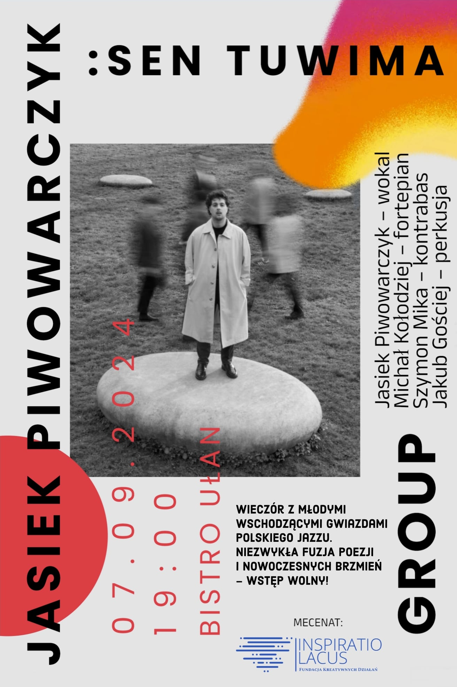
Już 7 września w sobotę o godzinie 19:00 zapraszamy na wyjątkowe wydarzenie na tarasie widokowym Bistro Ułan – koncert zespołu Jasiek Piwowarczyk Group, który zabierze nas w magiczną podróż do świata poezji Juliana Tuwima. Podczas tego artystycznego widowiska zespół zrealizuje projekt „Sen Tuwima”, łącząc muzykę, słowo i obraz w harmonijną całość.
Jasiek Piwowarczyk Group to zespół składający się z niezwykle utalentowanych młodych muzyków, którzy wyróżniają się na polskiej scenie jazzu. W sobotę zagrają w składzie:
Jasiek Piwowarczyk – wokal
Michał Kołodziej – fortepian
Szymon Mika – kontrabas
Jakub Gościej – perkusja
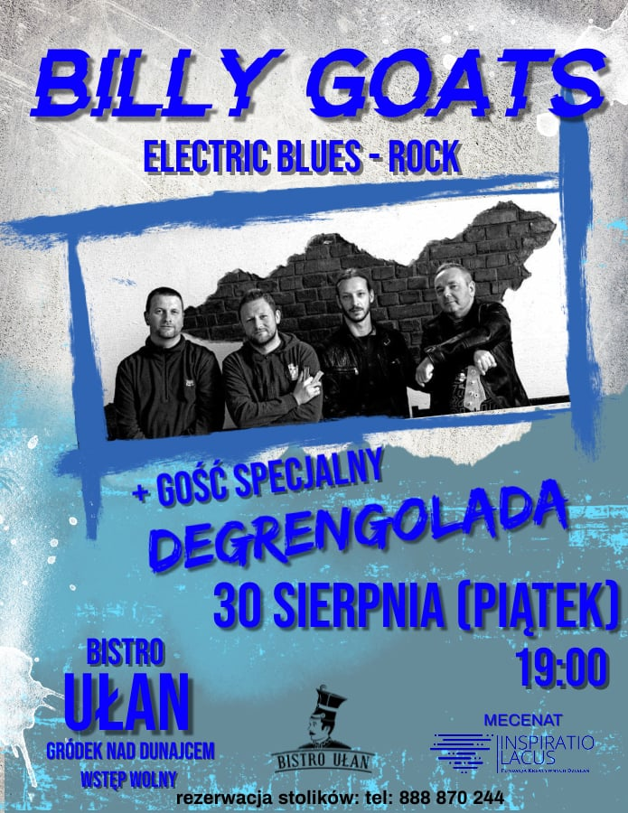
Muzyczny wieczór pełen niespodzianek w Bistro Ułan!
Już w najbliższy piątek, przed gwiazdą wieczoru, zespołem Billy Goats, na naszym tarasie zagrają chłopaki z Nowego Sącza – zespół Degrengolada!
To młody, pełen energii zespół. Przygotujcie się na solidną dawkę rockowych brzmień i niezapomnianą atmosferę!
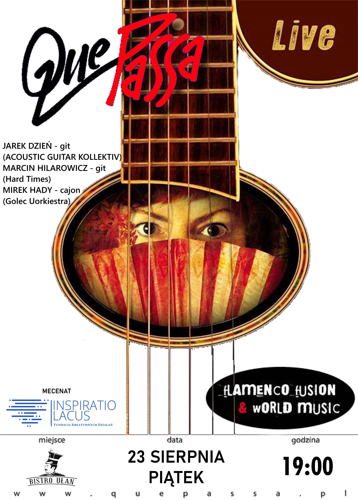
Naznaczona indywidualnością każdego z muzyków mieszanka flamenco, world music, jazz, latin i tanga już 23 sierpnia o godzinie 19:00 u nas. Na muzycznym tarasie Bistro Ułan, zespół Que Passa.Swój styl określają jako FLAMENCO FUSION. Wirtuozeria i pasja porywają słuchaczy a perfekcja wykonania i bogactwo rytmów nadaje ich kompozycjom niepowtarzalny, witalny charakter, czyniąc styl zespołu rozpoznawalnym i unikatowym. Na repertuar Que passa składają się głównie autorskie kompozycje założyciela zespołu Jarka Dzienia. Muzycy QP współpracują z artystami tj. : G.Turnau, Golec uOrkiestra, Megitza, Hard Times, H.Mlynkowa , P.Mąciwoda, B.Maseli, K.Badach, J.Królik i in.
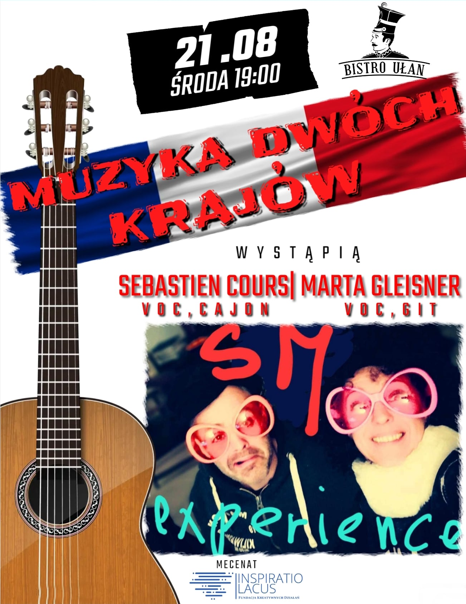
21 sierpnia o godz. 19:00, w Bistro Ułan odbędzie się niezwykły koncert SM EXPERIENCE, duetu Marta Gleisner i Sebastien Cours. Marta, utalentowana artystka malarka i gitarzystka, wraz z Sebastienem, który przyjechał prosto z malowniczego Saint-Tropez, stworzą niezapomniany klimat. Usłyszycie połączenie francuskich i polskich melodii z nutą flamenco – coś, czego nie można przegapić!
Niech ten wieczór pełen muzyki i emocji stanie się Waszym ulubionym wspomnieniem!
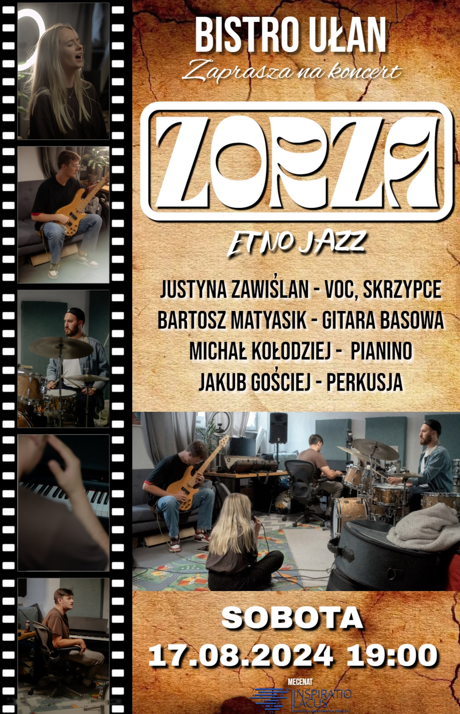
Zespół Zorza powstał w 2022 roku. W jego skład wchodzi czterech członków: Michał Kołodziej (pianino), Bartosz Matyasik (gitara basowa), Jakuba Gościej (perkusja) i Justyna Zawiślan (wokal i skrzypce). Ich muzyka oscyluje wokół wielu gatunków, natomiast wiodącym jest etno jazz. Wiele elementów koncertów jest improwizowanych.
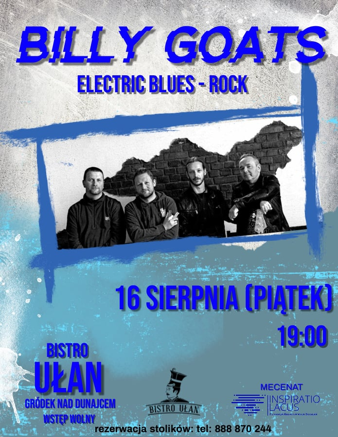
Billy Goats to zespół złożony z muzyków od lat związanych ze sceną, którzy w 2011 roku połączyli swoje siły, tworząc projekt, który szybko zdobył uznanie. Ich muzyka oscyluje wokół szeroko rozumianego rocka i bluesa. W ich repertuarze znajdziecie zarówno mocne pulsacje perkusji, dynamiczne riffy gitarowe, jak i nostalgiczne łkanie harmonijki ustnej oraz piękne brzmienie gitary akustycznej. Całość, doprawiona charakterystycznym wokalem, tworzy zwartą i wpadającą w ucho mieszankę.
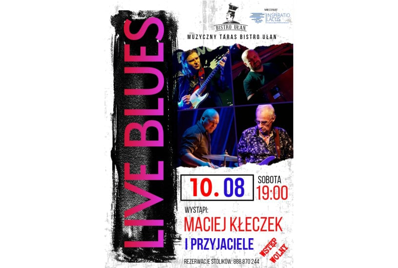
W sobotę 10 sierpnia zapraszamy wszystkich miłośników bluesa na wyjątkowy koncert w Bistro Ułan! Wystąpią Maciej Kłeczek i Przyjaciele, którzy przeniosą nas w świat niesamowitych dźwięków i niezapomnianych emocji. Maciej Kłeczek i jego zespół są znani z występów na prestiżowych festiwalach, takich jak Summer Jazz Festival w Krakowie, gdzie zachwycili publiczność swoimi interpretacjami klasycznych bluesowych utworów oraz własnymi kompozycjami w Harris Piano Jazz Bar.
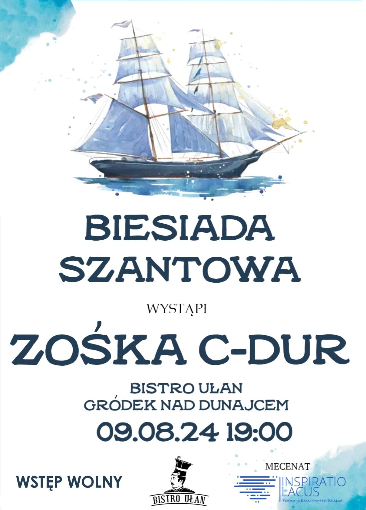
Już w ten piątek o 19:00 spotykamy się na naszej wyjątkowej Biesiadzie Szantowej! Przygotujcie się na wieczór pełen morskich opowieści i wspaniałej muzyki na żywo. Specjalnie dla Was zagra zespół Zóśka C-Dur, który wprowadzi nas w szantowy klimat i zapewni niezapomniane wrażenia.
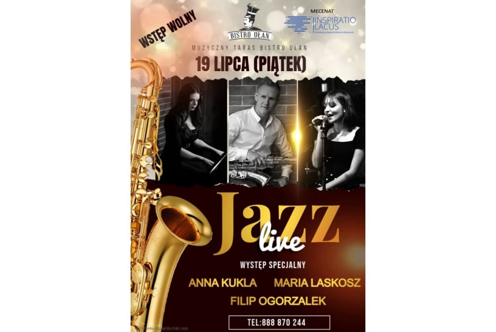
W piątek o 19:00 zapraszamy serdecznie na jazzowy wieczór.
Wystąpią:
Ania Kukla - wokal
Filip Ogorzałek - saksofon
Maria Laskosz - fortepian
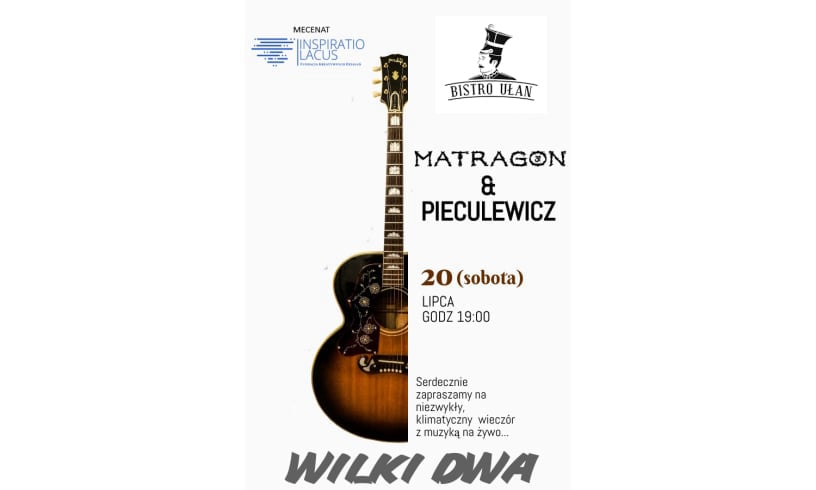
WILKI DWA - koncert akustyczny
Robert Pieculewicz - gitara, śpiew
Matragon - gitara, śpiew
Bistro Ułan - Gródek Nad Dunajcem
20 lipca 2024 / sobota / godz. 19:00
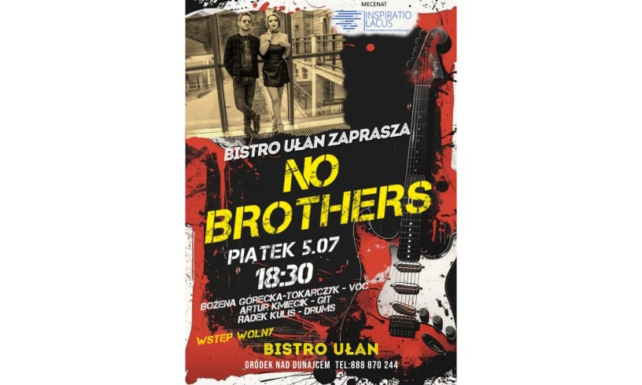
No Brothers – to gitarowa energia połączona z charyzmatycznym wokalem a także mocne, melodyjne kompozycje, poruszające teksty, bogate brzmienie i żywiołowe koncerty. W dorobku dwie przebojowe płyty oraz liczne koncerty plenerowe i klubowe m. in. w ramach We wrześniu 2015 roku utwór Oderwani od rzeczywistości znalazł się na pierwszym miejscu list przebojów MTV24.TV i portalu Planeta Kobiet. W 2017. W 2018 roku Bożena Górecka-Tokarczyk i Artur Kmiecik wystąpili w programie Mam Talent w telewizji TVN.
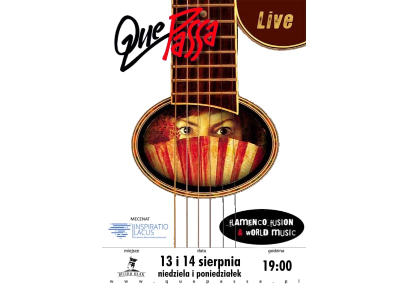
Spontanicznie na instrumentach perkusyjnych wystąpi Tomas Celis Sanchez!
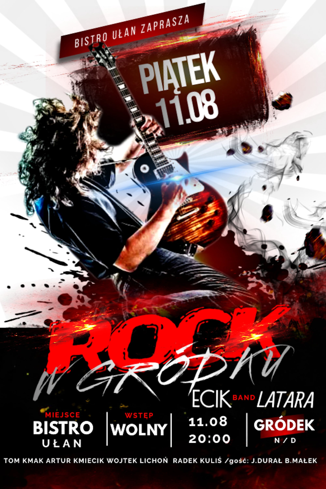
Ecik Latara Band powraca po latach w rozszerzonym składzie.
Tom Ecik Kmak Artur Kmiecik Wojtek Lichoń Radek Kuliś. Gośćmi będą Jerzy Durał i Beata Małek. Już w piątek 11 sierpnia 2023 o godz. 20.00 w Bistro Ułan w Gródek nad Dunajcem. Zapraszamy! Nie może Was zabraknąć na tym koncercie! Do zobaczenia!🙂
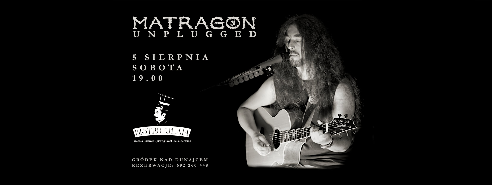
Matragon Akustycznie - koncert live
Bistro Ułan - Gródek Nad Dunajcem
5 sierpnia 2023, sobota, godz. 19:00
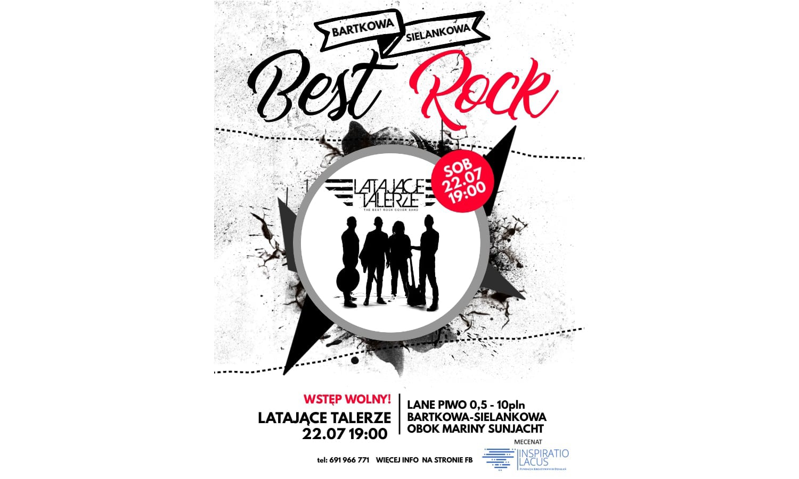
Zapraszamy na wyjątkowy koncert zespołu Latające Talerze do "Bartkowej-Sielankowej" Wspólnie cieszymy się dobrą muzyką, wspaniałymi widokami jeziora i harmonijną atmosferą. Przybywajcie i delektujcie się niezapomnianą muzyką w pięknym otoczeniu!
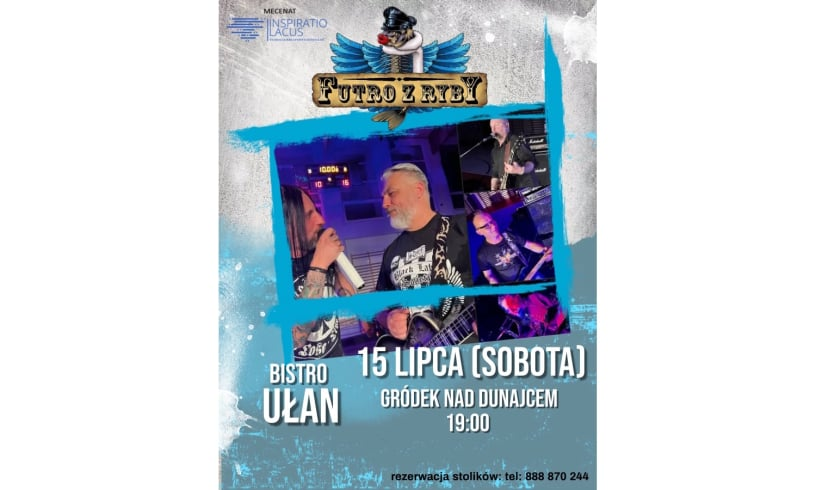
W wakacyjnym nastroju zagrają dla Was nad Jeziorem Rożnowskim w Bistro Ułan, Gródek, 15.07.2023 (najbliższa sobota), godz.19.00
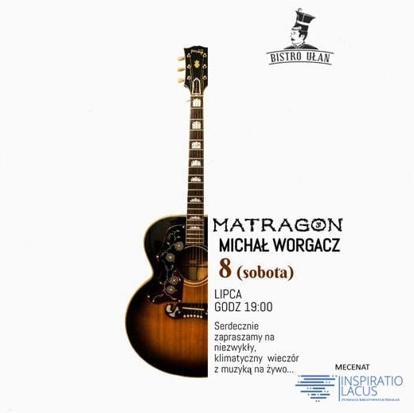
Michał 'Matragon' Worgacz utalentowany muzyk, gitarzysta, lider muzycznych projektów takich jak Kroner Cirkus czy Matragon Electric Band.
Współpracuje również z innymi zespołami, takimi jak Another Pink Floyd i Revolver. Poprzez elektryzujące brzmienia, dynamiczne aranżacje i niesamowitą wirtuozerię gitarową, na swoich koncertach, ożywia rockowego ducha.
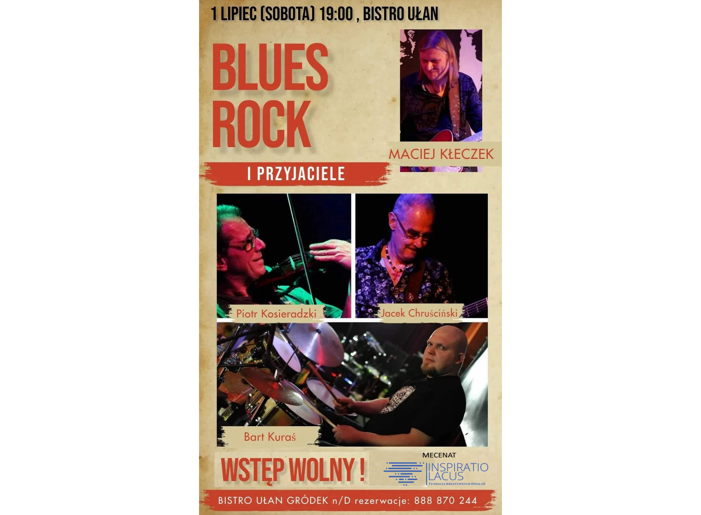
Zapraszamy serdecznie już w tę sobotę, wstęp wolny!
Fundacja powstała, aby wspierać ochronę dziedzictwa kulturowego, rozwój edukacji artystycznej oraz promocję turystyki historycznej i ekologicznej. Tworzymy przestrzeń, w której muzycy, artyści i lokalna społeczność mogą rozwijać swoje talenty oraz uczestniczyć w wyjątkowych wydarzeniach artystycznych i edukacyjnych. Malownicza lokalizacja nad jeziorem, otoczona przyrodą, sprzyja zarówno twórczej pracy, jak i relaksowi. Naszą misją jest wspieranie artystów, budowanie więzi społecznych oraz wzmacnianie tożsamości regionalnej poprzez wydarzenia kulturalne i historyczne.
Wierzymy w siłę kultury jako narzędzia do budowania wspólnoty i inspirowania do działania. Nasze kluczowe wartości to:
Ochrona dziedzictwa – rewitalizacja obiektów historycznych i promocja tradycyjnych form rzemiosła.
Kreatywność i pasja – rozwój twórczości artystycznej poprzez warsztaty, koncerty i festiwale.
Szacunek dla artystów – zapewnienie odpowiednich warunków pracy i godziwego wynagrodzenia.
Fundacja działa na rzecz lokalnej społeczności, organizując wydarzenia artystyczne, edukacyjne i turystyczne, które wzbogacają życie kulturalne i promują region jako wyjątkowe miejsce o bogatej historii i tradycjach.
Nasza fundacja jest miejscem, gdzie muzycy mogą rozwijać swoje umiejętności, tworzyć i prezentować swoją sztukę w wyjątkowych warunkach. Zapewniamy przestrzeń do prób, koncertów oraz warsztatów, umożliwiając artystom realizację ich pasji. W malowniczym otoczeniu nad jeziorem twórcza praca łączy się z inspirującym kontaktem z naturą i dziedzictwem kulturowym. Dołącz do nas, aby doświadczyć, jak Twoja twórczość może stać się częścią niezapomnianych wydarzeń artystycznych.
Fundacja „Inspiratio Lacus” działa na rzecz społeczności lokalnej i turystów, organizując koncerty, festiwale, warsztaty i wydarzenia edukacyjne. Naszym celem jest wzbogacenie życia kulturalnego regionu, promocja lokalnych tradycji oraz integracja mieszkańców i gości. Tworzymy miejsce spotkań, inspiracji i nauki, które pozwala każdemu uczestnikowi doświadczyć piękna kultury i natury.
Serdecznie zapraszamy sponsorów oraz darczyńców do współpracy i wsparcia naszych inicjatyw kulturalnych. Dzięki Waszemu zaangażowaniu możemy nadal organizować darmowe koncerty, warsztaty i wydarzenia artystyczne, które przyciągają turystów oraz wzbogacają życie lokalnej społeczności.
Możesz nas wspierać na kilka sposobów:
Przekazując 1,5% podatku na rzecz fundacji (nasz KRS znajdziesz w zakładce „Wsparcie”).
Wpłacając darowizny na nasze konto bankowe – każda kwota pomaga nam realizować naszą misję.
Wspólnie możemy stworzyć wyjątkowe miejsce, które inspiruje, edukuje i integruje. Twoje wsparcie to inwestycja w przyszłość kultury, lokalnego dziedzictwa i społeczności.